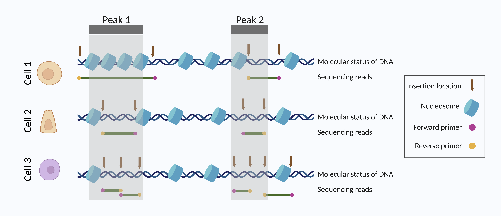

The goal of PICsnATAC is to accurately quantify snATAC-seq data. The two key components are:
1. Constructing cell-by-peak matrix with Paired Insertion Counting (PIC).
Motivation:
There are two common counting approaches for snATAC-seq data, fragment-based counting and insertion-based counting. They generate inconsistent results (see figure below).


Here, we present PIC as a uniform counting choice for various assays, including 10X Genomics snATAC-seq, sci-ATAC-seq, SNARE-seq, dsc-ATAC-seq, s3-ATAC-seq, and scNANO-ATAC.
2. Conducting Differential Accessible Region (DAR) identification analysis using the PIC matrix.
Motivation:
Two insertion events with correct primer configurations are required for one viable fragment. We derived the probability distribution of fragment count as a function of insertion rate and derived a model-based insertion rate estimation framework. We further applied a likelihood ratio test approach to detect DARs between populations.

Building upon our model-based insertion rate estimation framework, this analysis provides a more sensitive test of DAR between cell groups (cell types).
Dependencies
Please install the dependent libraries by running the following codes
install.packages('data.table') ## (please make sure it is newer than 1.8)
if (!require("BiocManager", quietly = TRUE))
install.packages("BiocManager")
BiocManager::install(c('IRanges', 'GenomicRanges','Rsamtools', 'GenomeInfoDb'))Installation
You can install the most up-to-date version of PICsnATAC from GitHub with:
# install.packages("devtools")
devtools::install_github("Zhen-Miao/PICsnATAC")PIC-snATAC is a light-weight package. Installation typically takes <5 min.
Example
This is a basic example which shows you how to construct PIC-based cell by peak matrix:
library(PICsnATAC)
pic_matrix <- PIC_counting(cells, fragment_tsv_gz_file_location, peak_sets)Vignette and Interactive Notebooks
Notebook 1: Run PIC counting on PBMC data.
Notebook 2: Run PIC DAR on SNARE-seq2 brain data.
You can run the above notebooks with Google Colab (processed example data and link provided), but it is recommended that you run it using computing cluster for large datasets
Vignette 1: PIC counting from Cell Ranger output.
Vignette 2: PIC counting in Seurat/Signac workflow.
Vignette 3: PIC counting in ArchR workflow.
vignette 4: PIC counting with dsc-ATAC-seq data.
vignette 5: DAR test with PIC parametric test framework.